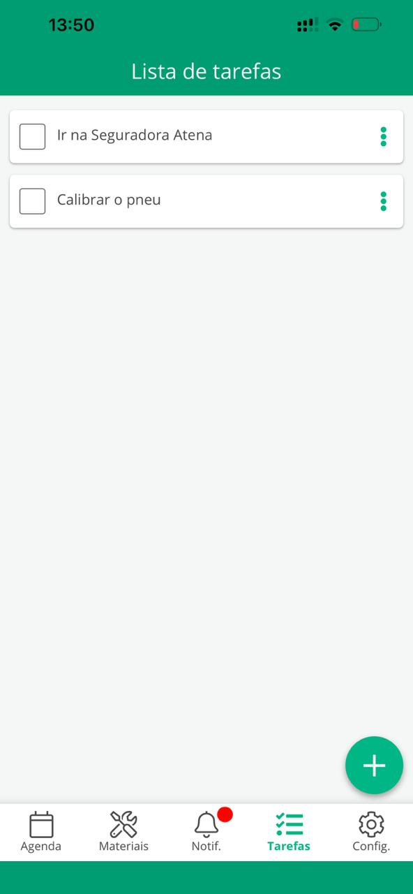
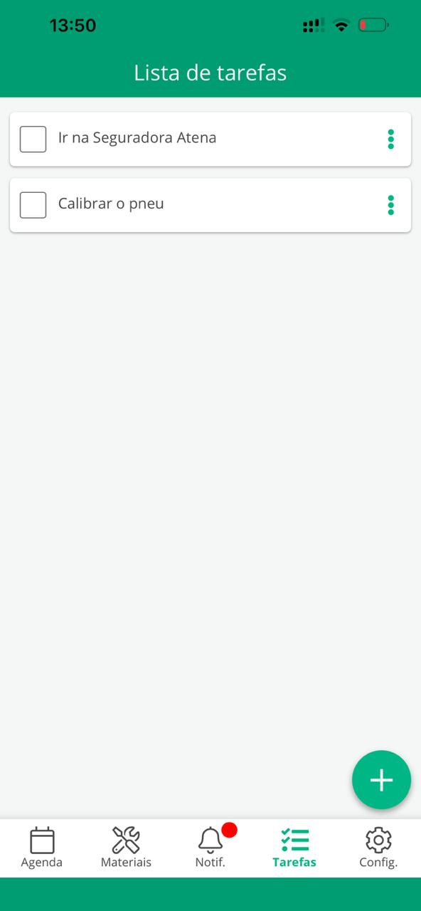

Como técnico, você lidera estas 7 fases, executando as tarefas críticas.
Fase 1: Preparação
Confira o veículo, ferramentas, máquina de fusão e materiais. Analise a OS no app. Você é o responsável pelo checklist.
Fase 2: Análise e Contato com NOC
Realize a APR. Identifique a CTO e a porta. Contate o NOC com os dados (placa, porta, S/N da ONT) e aguarde o provisionamento.
Fase 3: Lançamento do Cabo
Guie seu auxiliar no lançamento do cabo Drop, garantindo que o cabo não seja danificado (quinado) e o trajeto seja seguro e limpo.
Fase 4: Conexão na CTO
Enquanto seu auxiliar prepara a ponta, você realiza a conectorização ou fusão na CTO. A qualidade desta conexão é crucial para o sinal.
Fase 5: Instalação Interna
Defina junto ao cliente o melhor local para a ONT. Realize a conectorização e conecte a fibra. Configure a rede Wi-Fi (SSID e senha).
Fase 6: Testes e Validação
Com a ONT online, use o Power Meter para medir o sinal na PTO. O valor deve estar na faixa ideal (-15 a -25dBm). Informe o resultado ao NOC.
Fase 7: Finalização e Encerramento
Garanta o padrão de qualidade na fixação dos cabos. Limpe o local. Oriente o cliente. Encerre a OS no InMap Service, adicionando materiais e coletando a assinatura.


 
